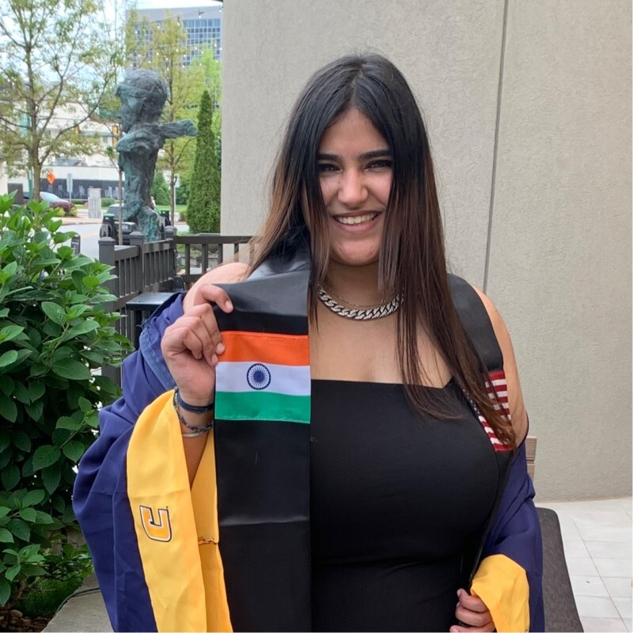

Prerna's Professional Portfolio
Contents
|
IntroductionAbout MeMy name is Prerna Kaur Harvinder Singh Bindra, and I was born on 24th September 2000 in Mumbai. Growing up in the vibrant city has shaped my outlook and given me a deep appreciation for culture, diversity, and creativity. Early LifeMy childhood was spent in Mumbai, where I grew up in a close-knit environment surrounded by family. I have fond memories of simple joys like playing with friends, celebrating festivals, and exploring the lively neighborhoods of the city. Those early years were full of curiosity and imagination, shaping my outlook and teaching me the value of togetherness, fun, and learning through experiences. Educational Background
Professional ExperienceI first started working as a Marketing Executive for a fintech company called eMSME. Due to the team being just me and the manager, I had to step my game up and so I took on the role of the designer, editor, social media manager, creative head, etc. Though this was a great experience, my heart was never in it so I switched to another company, a branding agency called WAYS as a brand executive. Projects
Contacts
References |
About MeName: Prerna Kaur Bindra "A dream without a plan is just a wish" Born: 24 th September 2000 Hobbies: Coding, Outdoor Acitivites, Party Profession: Brand Executive Alma mater: Univeristy of Tennessee at Chattanooga Awards: Latin Honors Graduate |